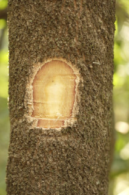
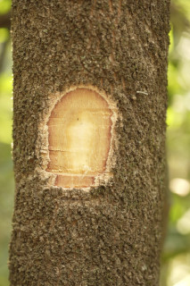
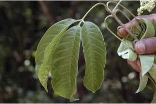
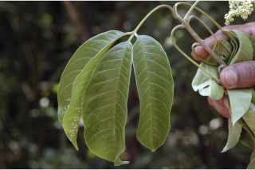

Trees ca. 10 m tall.
ಅಂದಾಜು 10 ಮೀ ಎತ್ತರದ ಮರಗಳು.
Trees ca. 10 m tall.
மரங்கள் 10 மீ. உயரம் வரை வளரக்கூடியது.
Bark grey, corky when mature; blaze brownish.
ತೊಗಟೆ ಬೂದು ಬಣ್ಣ ಹೊಂದಿದ್ದು ಬಲಿತಾಗ ಬೆಂಡು ಮಾದರಿಯಲ್ಲಿರುತ್ತದೆ;ಕಚ್ಚು ಮಾಡಿದ ಜಾಗ ಕಂದು ಬಣ್ಣ ಹೊಂದಿರುತ್ತದೆ.
Bark grey, corky when mature; blaze brownish.
மரத்தின் பட்டை சாம்பல் நிறமானது, முதிரும் போது கார்க் போன்றது; உள்பட்டை ப்ரவுன் நிறமானது.
Young branchlets quadrangular to subterete, minutely pubescent.
ಎಳೆಯ ಕಿರುಕೊಂಬೆಗಳು ಚತುಷ್ಕೋನದಿಂದ ಉಪದುಂಡಾಗಿರುವರೆಗಿನ ಆಕಾರ ಹೊಂದಿದ್ದು ಸೂಕ್ಷ್ಮವಾದ ಮೃದುತುಪ್ಪಳದಿಂದ ಕೂಡಿರುತ್ತವೆ.
Young branchlets quadrangular to subterete, minutely pubescent.
சிறிய நுனிக்கிளைகள் குறுக்குவெட்டுத் தோற்றத்தில் நான்கு கோணங்களுடையது முதல் குறுக்குவெட்டுத் தோற்றத்தில் கிட்டதட்ட வளையமானது, நுண்ணிய உரோமங்களுடையது.
Leaves compound, trifoliate, opposite, decussate; rachis 3.5-11 cm long, minutely pubescent when young, pulvinate; petiolule 0.6-1.1 cm long, canaliculate, slightly pubescent; leaflets 7-20 x 3-8.5 cm (usually larger in saplings), elliptic to obovate, apex acuminate, base asymmetric or slightly attenuate, margin entire, chartaceous, glandular punctate, glabrous, shining above; midrib slightly canaliculate; secondary_nerves 7-16 pairs, straight or gradually curved; tertiary_nerves slender, broadly reticulate.
ಎಲೆಗಳು ಸಂಯುಕ್ತವಾಗಿದ್ದು,ತ್ರಿಪರ್ಣಿಕೆ ಮಾದರಿಯಲ್ಲಿದ್ದು ಅಭಿಮುಖಿಗಳಾಗಿದ್ದು ಕತ್ತರಿಯಾಕಾರದಲ್ಲಿ ಜೋಡಿವಾಗಿರುತ್ತವೆ;ಅಕ್ಷದಿಂಡು 3.5 ರಿಂದ 11 ಸೆಂ.ಮೀ ಉದ್ದವಿದ್ದು,ಎಳೆಯದಾಗಿದ್ದಾಗ ಸೂಕ್ಷ್ಮವಾದ ಮೃದುತುಪ್ಪಳದಿಂದ ಕೂಡಿರುತ್ತವೆ ಮತ್ತು ಉಬ್ಬಿದ ಬುಡ ಹೊಂದಿರುತ್ತವೆ; ಉಪತೊಟ್ಟುಗಳು 0.6 ರಿಂದ 1.1 ಸೆಂ.ಮೀವರೆಗಿನ ಉದ್ದ ಹೊಂದಿದ್ದು ಕಾಲುವೆ ಗೆರೆ ಸಮೇತವಿದ್ದು ಸ್ವಲ್ಪಮಟ್ಟಿಗೆ ಮೃದು ತುಪ್ಪಳದಿಂದ ಆವೃತವಾಗಿರುತ್ತವೆ;ಕಿರುಪತ್ರಗಳು 7-20 X 3- 8.5 ಸೆಂ.ಮೀ ಗಾತ್ರ(ಸಸಿಗಳು ಸಾಮಾನ್ಯವಾಗಿ ದೊಡ್ಡ ಗಾತ್ರ ಹೊಂದಿರುತ್ತವೆ),ಅಂಡವೃತ್ತದಿಂದ ಬುಗುರಿವರೆಗಿನ ಆಕಾರ,ಕ್ರಮೇಣ ಚೂಪಾಗುವ ತುದಿ, ಅಸಮಪಾರ್ಶ್ವತೆಯುಳ್ಳ ಅಥವಾ ಸ್ವಲ್ಪಮಟ್ಟಿಗೆ ಒಳಬಾಗಿದ ಬುಡ,ನಯವಾದ ಅಂಚು,ಕಾಗದವನ್ನೋಲುವ ಮೇಲ್ಮೈ ಹೊಂದಿದ್ದು,ಮಚ್ಚೆ ರೀತಿಯ ರಸಗ್ರಂಥಿಗಳ ಸಮೇತವಿದ್ದು ರೋಮರಹಿತವಾಗಿರುತ್ತವೆ ಮತ್ತು ಮೇಲ್ಭಾಗದಲ್ಲಿ ಹೊಳಪನ್ನು ಹೊಂದಿರುತ್ತವೆ;ಮಧ್ಯನಾಳ ಪತ್ರದ ಕಾಲುವೆ ಗೆರೆ ಸಮೇತವಿರುತ್ತದೆ;ಎರಡನೇ ದರ್ಜೆಯ ನಾಳಗಳು 7-16 ಜೋಡಿಗಳಿದ್ದು ನೇರವಾಗಿ ಅಥವಾ ಕ್ರಮೇಣವಾಗಿ ಬಾಗಿರುತ್ತವೆ;ಮೂರನೇ ದರ್ಜೆಯ ನಾಳಗಳು ಅಸ್ಪಷ್ಟವಾಗಿರುವುದರಿಂದ ವಿಶಾಲ ಜಾಲಬಂಧ ನಾಳ ವಿನ್ಯಾಸದವರೆಗಿನ ಮಾದರಿಯಲ್ಲಿರುತ್ತವೆ.
Leaves compound, trifoliate, opposite, decussate; rachis 3.5-11 cm long, minutely pubescent when young, pulvinate; petiolule 0.6-1.1 cm long, canaliculate, slightly pubescent; leaflets 7-20 x 3-8.5 cm (usually larger in saplings), elliptic to obovate, apex acuminate, base asymmetric or slightly attenuate, margin entire, chartaceous, glandular punctate, glabrous, shining above; midrib slightly canaliculate; secondary_nerves 7-16 pairs, straight or gradually curved; tertiary_nerves slender, broadly reticulate.
இலைகள் கூட்டிலை, மூவ்விலை கூட்டிலைகள், எதிரடுக்கமானவை, குறுக்குமறுக்கமானவை; மத்தியகாம்பு (ராக்கிஸ்) 3.5-11 செ.மீ. நீளமானது, இளம்பருவத்தில் நுண்ணிய உரோமங்களுடையது, பல்வினேட்; சிற்றிலைக்காம்பு 0.6-1.1 செ.மீ. நீளமானது, குறுக்குவெட்டுத் தோற்றத்தில் கேனாலிகுலேட், சிறிது உரோமங்களுடையது; சிற்றிலை 7-20 X 3-8.5 செ.மீ. (இளம்பருவத்தில் பெரியவை), நீள்வட்ட வடிவானது முதல் தலைகீழ் முட்டை வடிவானது, அலகின் நுனி அதிக்கூரியது, அலகின் தளம் சமமற்றது அல்லது சிறிது அட்டனுவேட், அலகின் விளிம்பு முழுமையானது, சார்ட்டோசியஸ், ஒளிபுகும் சுரப்பி புள்ளிகளுடையது, உரோமங்களற்றது, அலகின் மேற்பரப்பு பளபளப்பானது; அலகின் பரப்பைவிட சிறிது பள்ளமானது; இரண்டாம் நிலை நரம்புகள் 7-16 ஜோடிகள், நோரானது அல்லது சீராக வளைந்தவை; மூன்றாம் நிலை நரம்புகள் மெல்லியவை, அகன்ற வலைப்பின்னல் போன்றவை.
Inflorescence spreading panicled cyme; flowers greenish white, sessile.
ಪುಷ್ಪಮಂಜರಿಗಳು ಹರಡುವ ಪುನರಾವೃತ್ತಿಯಾಗಿ ಕವಲೊಡೆಯುವ ಮಧ್ಯಾರಂಭಿ ಮಾದರಿಯವು;ಹೂಗಳು ಹಸಿರು ಮಿಶ್ರಿತ ಬಿಳಿ ಬಣ್ಣದವುಗಳಾಗಿದ್ದು ತೊಟ್ಟುರಹಿತವಾಗಿರುತ್ತವೆ.
Inflorescence spreading panicled cyme; flowers greenish white, sessile.
மஞ்சரி நன்கு கிளைத்த பேனிக்கிள் சைம் வகை; மலர்கள் பச்சை-வெள்ளை நிறமானது, காம்பற்றது.
Follicles, 4-valved; 1-seeded cocci, black.
ಸೋತ ಫಲ 4-ಕೋಶಗಳ ಸಮೇತವಿರುತ್ತವೆ;ಮರಿಫಲಗಳಲ್ಲಿ ಒಂದು ಬೀಜವಿರುತ್ತದೆ.
Follicles, 4-valved; 1-seeded cocci, black.
பாலிக்கிள், 4-அறைகளுடையது; ஒவ்வொன்றும் ஒர் விதையுடைய உருண்ட வடிவுடையது (காக்கை), கருப்பு நிறமானது.
 

 
